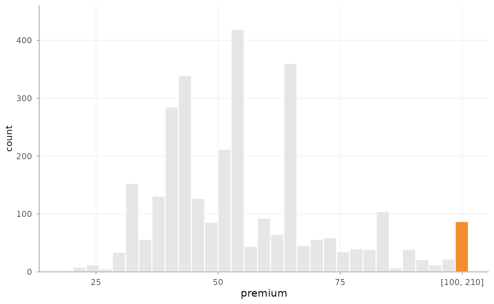
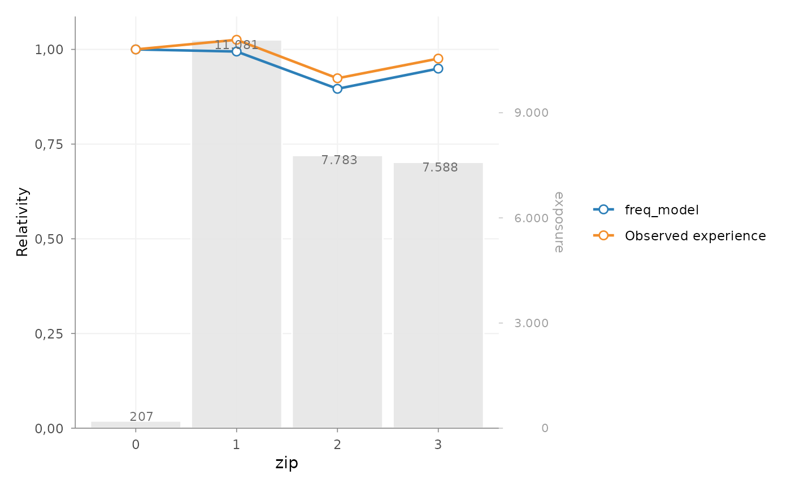

Pricing workflow building blocks
Source:vignettes/pricing-workflow-building-blocks.Rmd
pricing-workflow-building-blocks.Rmdinsurancerating provides building blocks for common
actuarial pricing tasks in GLM-based tariff analysis. The package does
not prescribe a single pricing method. Instead, it supports practical
steps that often appear in insurance pricing work: portfolio analysis,
model interpretation, tariff refinement and model validation.
This vignette gives a compact overview of those building blocks and how they can be combined.
1. Start with portfolio experience
A pricing analysis often starts by checking how the observed portfolio behaves by risk factor. This is useful before modelling, but also later when reviewing whether fitted relativities are plausible.
factor_analysis() summarises exposure, claim frequency,
average severity, risk premium and related metrics by one or more risk
factors.
fa <- factor_analysis(
MTPL,
risk_factors = "zip",
claim_count = "nclaims",
claim_amount = "amount",
exposure = "exposure"
)
head(fa)
#> zip amount nclaims exposure frequency average_severity risk_premium
#> 1 1 116178669 1593 11080.6274 0.1437644 72930.74 10484.846
#> 2 2 59751985 1008 7782.6301 0.1295192 59277.76 7677.608
#> 3 3 58988962 1038 7587.5644 0.1368028 56829.44 7774.427
#> 4 0 821510 29 206.8438 0.1402024 28327.93 3971.644The output helps answer practical questions such as:
- where exposure is concentrated
- whether observed differences are credible or noisy
- whether a segment is driven by a small number of claims
- which risk factors may need closer modelling or refinement
For numeric variables with long or skewed tails,
outlier_histogram() can help inspect extreme observations
before fitting severity models or constructing tariff segments.
outlier_histogram(
MTPL2,
x = "premium",
upper = 100,
density = FALSE
)
2. Assess large losses
Large claims can dominate severity and risk premium analysis. In capped severity workflows, it is often useful to assess a cap first, decompose the historical claim amounts, and then decide how the excess burden should be allocated. A low threshold increases pricing responsiveness but introduces volatility. A high threshold improves stability but may understate structural differences between segments.
portfolio <- data.frame(
policy_id = 1:10,
sector = rep(c("Industry", "Retail"), each = 5),
claim_count = c(0, 1, 1, 1, 1, 0, 1, 1, 1, 1),
claim_amount = c(
0, 25000, 120000, 50000, 175000,
0, 40000, 90000, 150000, 300000
),
policy_years = rep(1, 10)
)
thresholds <- assess_excess_threshold(
portfolio,
claim_amount = "claim_amount",
thresholds = c(25000, 50000, 100000, 150000),
exposure = "policy_years",
group = "sector",
claim_count = "claim_count"
)
if (requireNamespace("gt", quietly = TRUE)) {
as_gt(thresholds)
} else {
thresholds
}After choosing a threshold, redistribute_excess_loss()
caps the large losses and allocates the excess burden. The same
calculation supports two modelling workflows:
| Output | Typical redistribution weight | Interpretation | Typical use |
|---|---|---|---|
"redistributed_claim" |
Claim count or expected claim count | Excess loss redistributed across claims | One severity model |
"excess_loading" |
Earned exposure | Excess risk premium per exposure unit | Separate component of total risk premium |
The total excess loss is preserved in both workflows.
adjusted <- redistribute_excess_loss(
portfolio,
claim_amount = "claim_amount",
threshold = 100000,
claim_count = "claim_count",
risk_factor = "sector",
redistribution_method = "partial",
output = "redistributed_claim"
)Portfolio redistribution gives every claim the same excess amount per claim. Risk-factor redistribution uses only the experience of each group. Partial redistribution balances portfolio stability, group responsiveness and the credibility of observed excess experience.
severity_data <- adjusted[adjusted$claim_count > 0, ]
severity_model <- glm(
claim_amount_adjusted_average ~ sector,
weights = claim_count,
family = Gamma(link = "log"),
data = severity_data
)The adjusted average claim amount already contains the redistributed cost of large losses. A separate excess-premium component must therefore not be added again. This is a concise workflow and generally works well when modelled groups contain sufficient claims and sparse factor levels have been combined.
The amount allocated to an individual row is not an observed claim amount for that row. In a sparse sector, a severity model can therefore interpret allocated portfolio excess as evidence about that sector. Inspect claim volume, combine sparse levels using an actuarially meaningful hierarchy and validate coefficient stability over time. A minimum such as 20 claims can be a useful starting point, but is illustrative and must be selected for the portfolio at hand.
When retained severity and allocated excess should remain conceptually separate, use earned exposure as the redistribution weight:
loading_result <- redistribute_excess_loss(
portfolio,
claim_amount = "claim_amount",
threshold = 100000,
claim_count = "claim_count",
redistribution_weight = "policy_years",
risk_factor = "sector",
redistribution_method = "partial",
output = "excess_loading"
)
frequency_model <- glm(
claim_count ~ sector + offset(log(policy_years)),
family = poisson(link = "log"),
data = loading_result
)
retained_severity_model <- glm(
claim_amount_capped ~ sector,
weights = claim_count,
family = Gamma(link = "log"),
data = loading_result[loading_result$claim_count > 0, ]
)
loading_result$predicted_frequency <-
predict(frequency_model, type = "response") / loading_result$policy_years
loading_result$predicted_retained_severity <- predict(
retained_severity_model,
newdata = loading_result,
type = "response"
)
loading_result$predicted_retained_risk_premium <-
loading_result$predicted_frequency *
loading_result$predicted_retained_severity
loading_result$predicted_total_risk_premium <-
loading_result$predicted_retained_risk_premium +
loading_result$excess_loadingHere excess_loading is an amount per policy year. Claim
volume can still determine partial credibility while policy years
determine both the allocation shares and the unit of the loading. This
approach avoids treating allocated portfolio excess as an observed
individual claim severity.
3. Translate continuous factors into tariff segments
Many tariffs use grouped versions of continuous variables such as
age, vehicle age or insured value. risk_factor_gam() can be
used to inspect the fitted shape of a continuous risk factor.
derive_tariff_segments() can then derive candidate segment
boundaries from that pattern.
age_gam <- risk_factor_gam(
data = MTPL,
claim_count = "nclaims",
risk_factor = "age_policyholder",
exposure = "exposure"
)
age_segments <- derive_tariff_segments(age_gam)
age_segments
#> Tariff segment boundaries:
#> [1] 18 25 32 39 51 58 65 84 95The derived segments can be added back to the portfolio with
add_tariff_segments().
portfolio <- MTPL |>
add_tariff_segments(age_segments, name = "age_policyholder_segment")
head(portfolio[, c("age_policyholder", "age_policyholder_segment")])
#> # A tibble: 6 × 2
#> age_policyholder age_policyholder_segment
#> <int> <fct>
#> 1 70 (65,84]
#> 2 40 (39,51]
#> 3 78 (65,84]
#> 4 49 (39,51]
#> 5 59 (58,65]
#> 6 71 (65,84]These functions are intended to support actuarial judgement, not replace it. Candidate segment boundaries should still be reviewed for credibility, stability and practical usability.
4. Fit and interpret a GLM
GLMs are widely used in insurance pricing because they provide an
interpretable multiplicative structure. After fitting a model,
rating_table() expresses the coefficients in tariff-table
form.
portfolio$zip <- as.factor(portfolio$zip)
freq_model <- glm(
nclaims ~ zip + age_policyholder_segment + offset(log(exposure)),
family = poisson(),
data = portfolio
)
rt <- rating_table(
freq_model,
model_data = portfolio,
exposure = "exposure"
)
head(rt$df)
#> risk_factor level est_freq_model exposure
#> 1 (Intercept) (Intercept) 0.2743790 NA
#> 2 zip 0 1.0000000 207
#> 3 zip 1 0.9944341 11081
#> 4 zip 2 0.8960053 7783
#> 5 zip 3 0.9493475 7588
#> 6 age_policyholder_segment [18,25] 1.0000000 1331Observed portfolio experience can be attached to the rating table
with add_portfolio_experience(). When data is
supplied, the function calculates the observed experience for the
rating-table risk factors automatically. This makes the comparison
between model relativities and observed experience explicit.
rt |>
add_portfolio_experience(
data = portfolio,
claim_count = "nclaims",
exposure = "exposure"
) |>
autoplot(risk_factors = "zip", metric = "frequency")
5. Refine tariff effects when needed
Raw model output may be statistically valid but still unsuitable for direct tariff use. Sparse levels, noisy estimates or non-monotonic adjacent effects can make a tariff hard to explain or maintain.
The refinement workflow makes these adjustments explicit:
refined_model <- prepare_refinement(freq_model) |>
add_smoothing(
model_variable = "age_policyholder_segment",
source_variable = "age_policyholder",
weights = "exposure"
) |>
add_restriction(restrictions) |>
refit()Common refinement tasks include:
- smoothing adjacent tariff levels
- fixing selected coefficients to actuarial or commercial assumptions
- applying sublevel relativities within a broader GLM factor level
- refitting the model while preserving the intended tariff structure
These tools are most useful when the statistical model already captures the main risk structure and the remaining work is tariff refinement.
6. Validate model behaviour
Pricing models should be checked before their output is used in a
tariff. insurancerating contains helpers for several common
checks:
-
check_overdispersion()for Poisson frequency models -
check_residuals()for simulation-based residual diagnostics using DHARMa -
bootstrap_performance()for predictive stability with metrics such as RMSE -
rating_grid()to inspect observed rating-grid combinations
For example:
check_overdispersion(freq_model)
#> Dispersion ratio = 1.185
#> Pearson's Chi-squared = 35522.367
#> p-value = < 0.001
#> Overdispersion detected.
check_residuals(freq_model) |>
autoplot()Validation does not make a tariff decision by itself. It gives evidence about model fit, stability and areas that may need further review.
Typical workflow
One possible workflow is:
- Inspect the portfolio with
factor_analysis()andoutlier_histogram(). - Assess large-loss thresholds with
assess_excess_threshold()where capped severity or excess-loss loadings are relevant. - Use
redistribute_excess_loss()either to create one redistributed severity response or to calculate a separate excess loading per exposure unit. - Analyse continuous risk factors with
risk_factor_gam(). - Create candidate tariff segments with
derive_tariff_segments(). - Fit GLMs for frequency, severity or pure premium.
- Interpret coefficients with
rating_table(). - Compare fitted relativities with observed experience using
add_portfolio_experience(). - Apply refinement where needed with
prepare_refinement(),add_smoothing(),add_restriction()oradd_relativities(). - Validate the resulting model with the model-performance helpers.
The exact order and choice of functions depends on the portfolio, product, data quality and pricing objective.